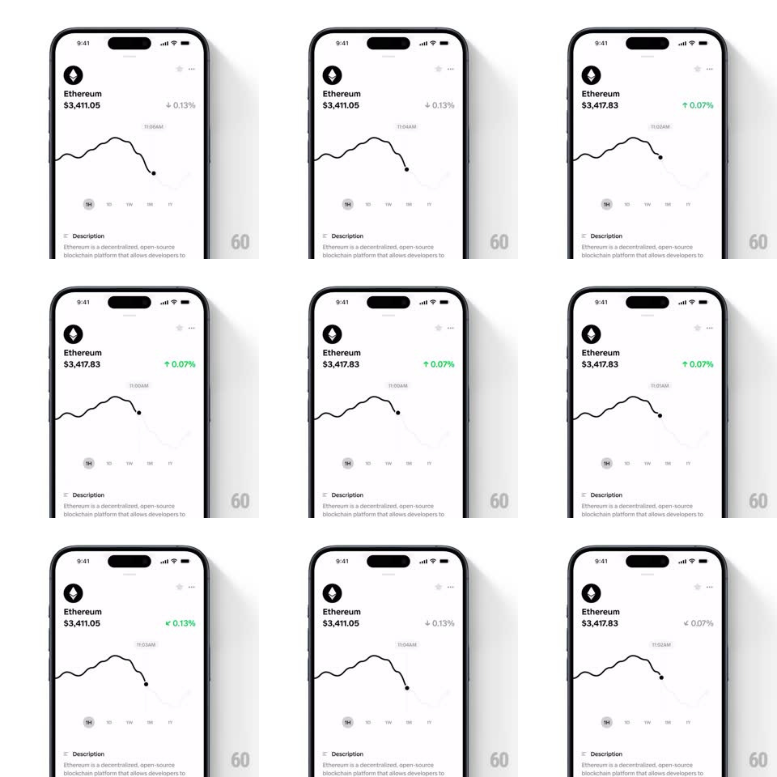

Media
Frame-by-frame

Rebuild this interaction 1:1: Family's crypto price graph scrubbing - dragging across the Ethereum price chart moves a scrubber dot along the line, updating the price readout, while the trend arrow beside the percentage badge rotates between up and down and the badge crossfades between green (gain) and gray/red (loss) depending on the scrubbed point's delta.

Rebuild this interaction 1:1: Family's crypto price graph scrubbing - dragging across the Ethereum price chart moves a scrubber dot along the line, updating the price readout, while the trend arrow beside the percentage badge rotates between up and down and the badge crossfades between green (gain) and gray/red (loss) depending on the scrubbed point's delta. ## Integration Integration: stack-agnostic spec - springs given as stiffness/damping, timed motions as duration + curve; map every value to your framework and animation library of choice. ## Scene White token page: Ethereum icon + name, large price, a percentage badge with a small up/down arrow, a line chart with a time label, period selector (1H 1D 1W 1M 1Y), and a Description section below. ## Motion spec Pattern: scrub-linked indicator state transitions. - Drag: a scrubber dot rides the line 1:1 with the finger; the price text updates continuously (number rolls, ~100ms per change); the time label above the chart tracks the dot. - Delta sign: as the scrubbed price crosses the period's starting price, the arrow rotates in place (up: 0deg, down: 180deg, spring ~380/22, 250ms, small overshoot) and the badge crossfades color (green <-> neutral/gray, 200ms). - Release: the scrubber fades out (300ms) and the readouts spring back to the current price (values roll back, arrow and badge transition with the same springs). - The line itself never animates - only the scrubber and indicators. ## Calibration - The arrow rotation is around its own center - a flip, not a swap of two icons. - Color and direction always change together, in the same 200-250ms window. ## Reduced motion Arrow and badge change without rotation/spring (instant crossfade); scrubber fades without roll-back animation. ## Don't miss - The comparison baseline is the period start price - the badge reflects the delta from there, not from the previous pixel. - The price text never jumps - it rolls/tweens between values.